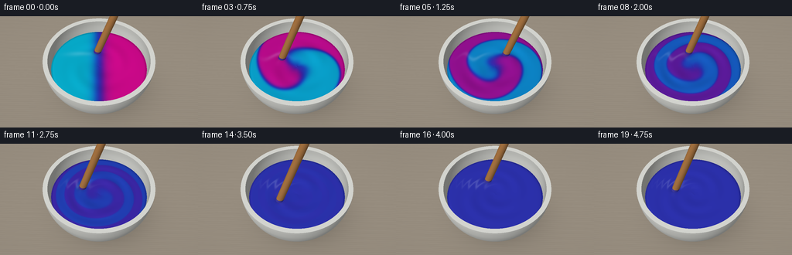
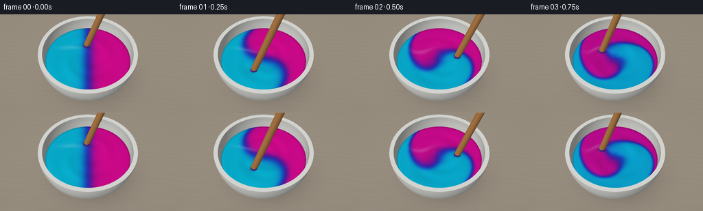

CODING AGENTS AS PIXEL WORLD MODELS
traex/GPT-6.1-Sol · phygen_124
点击播放 · 原生 RGB 像素
逐轮保存的候选
回放视频、检查图与代码变化。
每份候选均可单独播放。实际图片检查记录在下方工具轨迹中。
候选 01播放与检查图
点击播放 · 原生 RGB 像素


展开代码变化
--- 上一保存版本 +++ 本次保存版本 @@ -0,0 +1,169 @@ +from pathlib import Path +import numpy as np +from PIL import Image, ImageFilter +import artifact_io + +ROOT=Path(__file__).resolve().parent +W,H,S=256,144,3 +ww,hh=W*S,H*S +rng=np.random.default_rng(33) +# A bespoke analytic ray renderer: a ceramic mixing bowl, liquid and wooden paddle. +cam=np.array([0.,-3.8,5.6]); target=np.array([0.,0.,.58]) +fw=target-cam; fw/=np.linalg.norm(fw) +right=np.cross(fw,[0,0,1]);right/=np.linalg.norm(right) +up=np.cross(right,fw) +y,x=np.mgrid[0:hh,0:ww] +scale=np.tan(np.deg2rad(18.9)/2) +d=fw+(2*(x+.5)/ww-1)[...,None]*scale*ww/hh*right+(1-2*(y+.5)/hh)[...,None]*scale*up +d/=np.linalg.norm(d,axis=-1)[...,None] +light=np.array([-3.,-4.,7.]);light/=np.linalg.norm(light) + +def norm(a):return a/np.maximum(np.linalg.norm(a,axis=-1,keepdims=True),1e-10) + +def shade(base,n,p,rough=.3,metal=0): + nd=np.maximum(np.sum(n*light,axis=-1),0) + v=norm(cam-p); half=norm(v+light) + spec=np.maximum(np.sum(n*half,axis=-1),0)**(18 if rough>.5 else 65) + # large softbox reflection, together with diffuse skylight + soft=np.maximum(np.sum(n*norm(v+np.array([-.4,-.5,1.])),axis=-1),0)**18 + return base*(.49+.49*nd[...,None])+spec[...,None]*(.11 if rough>.5 else .38)+soft[...,None]*(.025 if rough>.5 else .045) + +# Geometric depths for stationary objects. +static=[] +def sphere_surface(center,r,inside=False): + oc=cam-np.array(center);b=np.sum(d*oc,axis=-1); c=np.sum(oc*oc)-r*r + disc=b*b-c + for sign in [-1,1]: + t=-b+sign*np.sqrt(np.maximum(disc,0));p=cam+t[...,None]*d + valid=(disc>=0)&(t>0)&(p[...,2]>=0)&(p[...,2]<=1.) + n=(p-np.array(center))/r + if inside:n=-n + static.append((np.where(valid,t,np.inf),p,n,'ceramic')) + +sphere_surface([0,0,1],1) +sphere_surface([0,0,1],.915,True) +t=(1-cam[2])/d[...,2];p=cam+t[...,None]*d;r2=p[...,0]**2+p[...,1]**2 +static.append((np.where((r2<=1)&(r2>=.915**2),t,np.inf),p,np.broadcast_to([0.,0.,1.],p.shape),'rim')) +# Table and soft contact shadow. +ttable=-cam[2]/d[...,2];ptable=cam+ttable[...,None]*d +X,Y=ptable[...,0],ptable[...,1] +wood=.006*np.sin(Y*140+np.sin(X*3)*2)+.003*np.sin(Y*370+np.sin(X*10)) +wood+=.002*np.sin(Y*51+X*4) +base=np.stack([.57+wood,.529+wood,.472+wood],axis=-1) +shadow=np.exp(-((X-.15)**2/1.17+(Y-.1)**2/.88)*2.2)*.31 +shadow+=np.exp(-(X**2+Y**2)*8)*.18 +base*=1-shadow[...,None] +# Faint seams across a matte warm-gray worktop. +seam=np.exp(-((Y+1.6)/.009)**2)*.04 +base-=seam[...,None] +table_rgb=np.clip(base,0,1) +# Place bowl materials in depth order. +static_depth=ttable.copy(); static_rgb=table_rgb.copy() +for tt,p,n,kind in static: + ceramic=np.empty_like(p);ceramic[:]=[.91,.914,.89] + # Grazing surfaces subtly reflect the cooler surroundings. + ceramic+=.008*np.sin(p[...,2,None]*32) + c=shade(ceramic,n,p,.28) + # Interior wall ambient occlusion, deepest below the lip. + if kind=='ceramic': + inward=np.sum(n*(p-np.array([0,0,1.])),axis=-1)<0 + c*=np.where(inward,.80+.17*np.clip(p[...,2],0,1),1)[...,None] + m=tt<static_depth;static_rgb[m]=c[m];static_depth=np.minimum(static_depth,tt) + +paint_z=.745 +pt=(paint_z-cam[2])/d[...,2];pp=cam+pt[...,None]*d +px,py=pp[...,0],pp[...,1] +r=np.sqrt(px*px+py*py);theta=np.arctan2(py,px) +paint_radius=np.sqrt(.915**2-(1-paint_z)**2) +paint_valid=(r<paint_radius) + +# finite cylinder paddle geometry, with a smoothly rounded end. +def cylinder(a,b,radius): + ba=b-a; length=np.linalg.norm(ba);axis=ba/length + oa=cam-a;dn=np.sum(d*axis,axis=-1);on=np.dot(oa,axis) + dp=d-dn[...,None]*axis;op=oa-on*axis + A=np.sum(dp*dp,axis=-1);B=np.sum(dp*op,axis=-1);C=np.dot(op,op)-radius*radius + disc=B*B-A*C;t=(-B-np.sqrt(np.maximum(disc,0)))/np.maximum(A,1e-8) + axial=on+t*dn;p=cam+t[...,None]*d + valid=(disc>=0)&(t>0)&(axial>=0)&(axial<=length) + normal=norm(p-a-axial[...,None]*axis) + return np.where(valid,t,np.inf),p,normal,axial,axis + +def ball(c,radius): + oc=cam-c;b=np.sum(d*oc,axis=-1);disc=b*b-np.dot(oc,oc)+radius**2 + t=-b-np.sqrt(np.maximum(disc,0));p=cam+t[...,None]*d + return np.where((disc>=0)&(t>0),t,np.inf),p,norm(p-c) + +def smooth(a,b,x): + v=np.clip((x-a)/(b-a),0,1);return v*v*(3-2*v) + +frames=[] +for i in range(20): + time=i/4 + # Initial equal-volume hemispheres are wound up by differential rotation. + winding=4.7*time*(1.22-(r/paint_radius)**1.5) + adv=theta-winding+.17*np.sin(theta*3-2.2*time)*smooth(0,.8,time) + f=.5+.5*np.tanh(8.5*(r/paint_radius)*np.cos(adv)) + blend=smooth(.25,3.8,time) + f=.5+(f-.5)*(1-blend) + cyan=np.array([.018,.715,.86]);mag=np.array([.86,.025,.56]) + pigment=np.exp((1-f[...,None])*np.log(cyan)+f[...,None]*np.log(mag)) + pigment+= (4*f*(1-f))[...,None]*np.array([.036,.047,.025]) + # Viscous spiral ridges and a shallow stirring vortex generate surface normals. + ph=theta-winding + ridge=(1-blend)*.012*np.sin(2*ph)*np.exp(-((r-.44)/.31)**2) + height=-.018*np.exp(-(r/.26)**2)+ridge + height+=.005*np.sin(19*r-2*theta-8*time)*np.exp(-((r-.42)/.29)**2) + height-=.008*np.exp(-((r-paint_radius)/.033)**2) + # Differentiate in image coordinates, then transform to world-plane slopes. + # Using direct nearby evaluations avoids perspective-dependent normals. + def hf(xx,yy): + rr=np.sqrt(xx*xx+yy*yy);th=np.arctan2(yy,xx) + wind=4.7*time*(1.22-(rr/paint_radius)**1.5) + return (-.018*np.exp(-(rr/.26)**2)+(1-blend)*.012*np.sin(2*(th-wind))*np.exp(-((rr-.44)/.31)**2)+.005*np.sin(19*rr-2*th-8*time)*np.exp(-((rr-.42)/.29)**2)-.008*np.exp(-((rr-paint_radius)/.033)**2)) + eps=.002 + nx=-(hf(px+eps,py)-hf(px-eps,py))/(2*eps) + ny=-(hf(px,py+eps)-hf(px,py-eps))/(2*eps) + pn=norm(np.stack([nx,ny,np.ones_like(px)],axis=-1)) + pc=shade(pigment,pn,pp,.24) + # Broad, broken elongated reflection on the wet paint. + refl=np.exp(-((px+.37)/.24)**2-((py-.24+.07*np.sin(ph*2))/.052)**2) + pc=pc*(1-.16*refl[...,None])+.16*refl[...,None]*np.array([.89,.94,1.]) + # Meniscus emphasizes the liquid's contact with the white bowl. + edge=np.exp(-((r-paint_radius+.012)/.013)**2) + pc*=1-.15*edge[...,None] + # Fast circular motion, gradually drawing the colored lobes into a swirl. + ang=1.7+9.5*time + orbit=.36 + tip=np.array([orbit*np.cos(ang),orbit*np.sin(ang),.695]) + top=tip+np.array([.67,.19,1.95]) + # A moving dark contact/wake under the immersed wooden paddle. + near=np.exp(-((px-tip[0])**2+(py-tip[1])**2)/.006) + pc*=1-.23*near[...,None] + wake=np.exp(-((r-orbit)/.037)**2)*np.exp(-(np.mod(theta-ang+np.pi,2*np.pi)-np.pi)**2/.15) + pc+=wake[...,None]*.037 + rgb=static_rgb.copy();depth=static_depth.copy() + m=paint_valid&(pt<depth);rgb[m]=pc[m];depth[m]=pt[m] + tt,pos,n,along,axis=cylinder(tip,top,.068) + # Warm beechwood with subtle longitudinal grain and an edge highlight. + side=np.cross(axis,[0,1,0]);side/=np.linalg.norm(side) + cross=np.sum((pos-tip)*side,axis=-1) + grain=.017*np.sin(cross*540+along*2)+.009*np.sin(cross*930+along*9) + woodcol=np.stack([.69+grain,.463+grain*.75,.249+grain*.5],axis=-1) + wc=shade(woodcol,n,pos,.65) + # Wetted lower paddle is coated with the same changing pigment mixture. + wet=pos[...,2]<.79 + wp=np.array([.24,.22,.67]) if blend>.8 else np.array([.26,.17,.61]) + wc[wet]=shade(np.broadcast_to(wp,pos.shape),n,pos,.3)[wet] + m=tt<depth;rgb[m]=wc[m];depth[m]=tt[m] + tt,pos,n=ball(tip,.068) + wc=shade(np.broadcast_to([.27,.21,.65],pos.shape),n,pos,.28) + m=tt<depth;rgb[m]=wc[m];depth[m]=tt[m] + # Photographic soft roll-off and fine consistent texture, not independent flicker. + vignette=1-.065*((x/ww-.5)**2+(y/hh-.48)**2) + rgb=np.clip(rgb*vignette[...,None],0,1) + # Render colors as display-space colors with a gentle lift in shadows. + rgb=np.clip(rgb**.92,0,1) + im=Image.fromarray((rgb*255+.5).astype(np.uint8)).resize((W,H),Image.Resampling.LANCZOS) + frames.append(np.asarray(im)) +artifact_io.save(np.stack(frames),ROOT)
可观测工具轨迹
实际执行的命令与返回图片。
命令 1exit 0
/bin/bash -lc 'ls -la && cat prompt.txt && cat GENERATION_RULES.md && cat task_spec.json'
命令 2exit 0
/bin/bash -lc 'cat artifact_io.py'
命令 3exit 0
/bin/bash -lc "cat > generate.py <<'PY'
from pathlib import Path
import numpy as np
from PIL import Image, ImageFilter
import artifact_io
ROOT=Path(__file__).resolve().parent
W,H,S=256,144,3
ww,hh=W*S,H*S
rng=np.random.default_rng(33)
# A bespoke analytic ray renderer: a ceramic mixing bowl, liquid and wooden paddle.
cam=np.array([0.,-3.8,5.6]); target=np.array([0.,0.,.58])
fw=target-cam; fw/=np.linalg.norm(fw)
right=np.cross(fw,[0,0,1]);right/=np.linalg.norm(right)
up=np.cross(right,fw)
y,x=np.mgrid[0:hh,0:ww]
scale=np.tan(np.deg2rad(18.9)/2)
d=fw+(2*(x+.5)/ww-1)[...,None]*scale*ww/hh*right+(1-2*(y+.5)/hh)[...,None]*scale*up
d/=np.linalg.norm(d,axis=-1)[...,None]
light=np.array([-3.,-4.,7.]);light/=np.linalg.norm(light)
def norm(a):return a/np.maximum(np.linalg.norm(a,axis=-1,keepdims=True),1e-10)
def shade(base,n,p,rough=.3,metal=0):
nd=np.maximum(np.sum(n*light,axis=-1),0)
v=norm(cam-p); half=norm(v+light)
spec=np.maximum(np.sum(n*half,axis=-1),0)**(18 if rough>.5 else 65)
# large softbox reflection, together with diffuse skylight
soft=np.maximum(np.sum(n*norm(v+np.array([-.4,-.5,1.])),axis=-1),0)**18
return base*(.49+.49*nd[...,None])+spec[...,None]*(.11 if rough>.5 else .38)+soft[...,None]*(.025 if rough>.5 else .045)
# Geometric depths for stationary objects.
static=[]
def sphere_surface(center,r,inside=False):
oc=cam-np.array(center);b=np.sum(d*oc,axis=-1); c=np.sum(oc*oc)-r*r
disc=b*b-c
for sign in [-1,1]:
t=-b+sign*np.sqrt(np.maximum(disc,0));p=cam+t[...,None]*d
valid=(disc>=0)&(t>0)&(p[...,2]>=0)&(p[...,2]<=1.)
n=(p-np.array(center))/r
if inside:n=-n
static.append((np.where(valid,t,np.inf),p,n,'ceramic'))
sphere_surface([0,0,1],1)
sphere_surface([0,0,1],.915,True)
t=(1-cam[2])/d[...,2];p=cam+t[...,None]*d;r2=p[...,0]**2+p[...,1]**2
static.append((np.where((r2<=1)&(r2>=.915**2),t,np.inf),p,np.broadcast_to([0.,0.,1.],p.shape),'rim'))
# Table and soft contact shadow.
ttable=-cam[2]/d[...,2];ptable=cam+ttable[...,None]*d
X,Y=ptable[...,0],ptable[...,1]
wood=.006*np.sin(Y*140+np.sin(X*3)*2)+.003*np.sin(Y*370+np.sin(X*10))
wood+=.002*np.sin(Y*51+X*4)
base=np.stack([.57+wood,.529+wood,.472+wood],axis=-1)
shadow=np.exp(-((X-.15)**2/1.17+(Y-.1)**2/.88)*2.2)*.31
shadow+=np.exp(-(X**2+Y**2)*8)*.18
base*=1-shadow[...,None]
# Faint seams across a matte warm-gray worktop.
seam=np.exp(-((Y+1.6)/.009)**2)*.04
base-=seam[...,None]
table_rgb=np.clip(base,0,1)
# Place bowl materials in depth order.
static_depth=ttable.copy(); static_rgb=table_rgb.copy()
for tt,p,n,kind in static:
ceramic=np.empty_like(p);ceramic[:]=[.91,.914,.89]
# Grazing surfaces subtly reflect the cooler surroundings.
ceramic+=.008*np.sin(p[...,2,None]*32)
c=shade(ceramic,n,p,.28)
# Interior wall ambient occlusion, deepest below the lip.
if kind=='ceramic':
inward=np.sum(n*(p-np.array([0,0,1.])),axis=-1)<0
c*=np.where(inward,.80+.17*np.clip(p[...,2],0,1),1)[...,None]
m=tt<static_depth;static_rgb[m]=c[m];static_depth=np.minimum(static_depth,tt)
paint_z=.745
pt=(paint_z-cam[2])/d[...,2];pp=cam+pt[...,None]*d
px,py=pp[...,0],pp[...,1]
r=np.sqrt(px*px+py*py);theta=np.arctan2(py,px)
paint_radius=np.sqrt(.915**2-(1-paint_z)**2)
paint_valid=(r<paint_radius)
# finite cylinder paddle geometry, with a smoothly rounded end.
def cylinder(a,b,radius):
ba=b-a; length=np.linalg.norm(ba);axis=ba/length
oa=cam-a;dn=np.sum(d*axis,axis=-1);on=np.dot(oa,axis)
dp=d-dn[...,None]*axis;op=oa-on*axis
A=np.sum(dp*dp,axis=-1);B=np.sum(dp*op,axis=-1);C=np.dot(op,op)-radius*radius
disc=B*B-A*C;t=(-B-np.sqrt(np.maximum(disc,0)))/np.maximum(A,1e-8)
axial=on+t*dn;p=cam+t[...,None]*d
valid=(disc>=0)&(t>0)&(axial>=0)&(axial<=length)
normal=norm(p-a-axial[...,None]*axis)
return np.where(valid,t,np.inf),p,normal,axial,axis
def ball(c,radius):
oc=cam-c;b=np.sum(d*oc,axis=-1);disc=b*b-np.dot(oc,oc)+radius**2
t=-b-np.sqrt(np.maximum(disc,0));p=cam+t[...,None]*d
return np.where((disc>=0)&(t>0),t,np.inf),p,norm(p-c)
def smooth(a,b,x):
v=np.clip((x-a)/(b-a),0,1);return v*v*(3-2*v)
frames=[]
for i in range(20):
time=i/4
# Initial equal-volume hemispheres are wound up by differential rotation.
winding=4.7*time*(1.22-(r/paint_radius)**1.5)
adv=theta-winding+.17*np.sin(theta*3-2.2*time)*smooth(0,.8,time)
f=.5+.5*np.tanh(8.5*(r/paint_radius)*np.cos(adv))
blend=smooth(.25,3.8,time)
f=.5+(f-.5)*(1-blend)
cyan=np.array([.018,.715,.86]);mag=np.array([.86,.025,.56])
pigment=np.exp((1-f[...,None])*np.log(cyan)+f[...,None]*np.log(mag))
pigment+= (4*f*(1-f))[...,None]*np.array([.036,.047,.025])
# Viscous spiral ridges and a shallow stirring vortex generate surface normals.
ph=theta-winding
ridge=(1-blend)*.012*np.sin(2*ph)*np.exp(-((r-.44)/.31)**2)
height=-.018*np.exp(-(r/.26)**2)+ridge
height+=.005*np.sin(19*r-2*theta-8*time)*np.exp(-((r-.42)/.29)**2)
height-=.008*np.exp(-((r-paint_radius)/.033)**2)
# Differentiate in image coordinates, then transform to world-plane slopes.
# Using direct nearby evaluations avoids perspective-dependent normals.
def hf(xx,yy):
rr=np.sqrt(xx*xx+yy*yy);th=np.arctan2(yy,xx)
wind=4.7*time*(1.22-(rr/paint_radius)**1.5)
return (-.018*np.exp(-(rr/.26)**2)+(1-blend)*.012*np.sin(2*(th-wind))*np.exp(-((rr-.44)/.31)**2)+.005*np.sin(19*rr-2*th-8*time)*np.exp(-((rr-.42)/.29)**2)-.008*np.exp(-((rr-paint_radius)/.033)**2))
eps=.002
nx=-(hf(px+eps,py)-hf(px-eps,py))/(2*eps)
ny=-(hf(px,py+eps)-hf(px,py-eps))/(2*eps)
pn=norm(np.stack([nx,ny,np.ones_like(px)],axis=-1))
pc=shade(pigment,pn,pp,.24)
# Broad, broken elongated reflection on the wet paint.
refl=np.exp(-((px+.37)/.24)**2-((py-.24+.07*np.sin(ph*2))/.052)**2)
pc=pc*(1-.16*refl[...,None])+.16*refl[...,None]*np.array([.89,.94,1.])
# Meniscus emphasizes the liquid's contact with the white bowl.
edge=np.exp(-((r-paint_radius+.012)/.013)**2)
pc*=1-.15*edge[...,None]
# Fast circular motion, gradually drawing the colored lobes into a swirl.
ang=1.7+9.5*time
orbit=.36
tip=np.array([orbit*np.cos(ang),orbit*np.sin(ang),.695])
top=tip+np.array([.67,.19,1.95])
# A moving dark contact/wake under the immersed wooden paddle.
near=np.exp(-((px-tip[0])**2+(py-tip[1])**2)/.006)
pc*=1-.23*near[...,None]
wake=np.exp(-((r-orbit)/.037)**2)*np.exp(-(np.mod(theta-ang+np.pi,2*np.pi)-np.pi)**2/.15)
pc+=wake[...,None]*.037
rgb=static_rgb.copy();depth=static_depth.copy()
m=paint_valid&(pt<depth);rgb[m]=pc[m];depth[m]=pt[m]
tt,pos,n,along,axis=cylinder(tip,top,.068)
# Warm beechwood with subtle longitudinal grain and an edge highlight.
side=np.cross(axis,[0,1,0]);side/=np.linalg.norm(side)
cross=np.sum((pos-tip)*side,axis=-1)
grain=.017*np.sin(cross*540+along*2)+.009*np.sin(cross*930+along*9)
woodcol=np.stack([.69+grain,.463+grain*.75,.249+grain*.5],axis=-1)
wc=shade(woodcol,n,pos,.65)
# Wetted lower paddle is coated with the same changing pigment mixture.
wet=pos[...,2]<.79
wp=np.array([.24,.22,.67]) if blend>.8 else np.array([.26,.17,.61])
wc[wet]=shade(np.broadcast_to(wp,pos.shape),n,pos,.3)[wet]
m=tt<depth;rgb[m]=wc[m];depth[m]=tt[m]
tt,pos,n=ball(tip,.068)
wc=shade(np.broadcast_to([.27,.21,.65],pos.shape),n,pos,.28)
m=tt<depth;rgb[m]=wc[m];depth[m]=tt[m]
# Photographic soft roll-off and fine consistent texture, not independent flicker.
vignette=1-.065*((x/ww-.5)**2+(y/hh-.48)**2)
rgb=np.clip(rgb*vignette[...,None],0,1)
# Render colors as display-space colors with a gentle lift in shadows.
rgb=np.clip(rgb**.92,0,1)
im=Image.fromarray((rgb*255+.5).astype(np.uint8)).resize((W,H),Image.Resampling.LANCZOS)
frames.append(np.asarray(im))
artifact_io.save(np.stack(frames),ROOT)
PY
python generate.py"视觉工具实际返回图片 1

保存候选 1 份；完成命令 3 次；可验证图片返回 1 张。原始 API 响应与完整日志保留在本地。